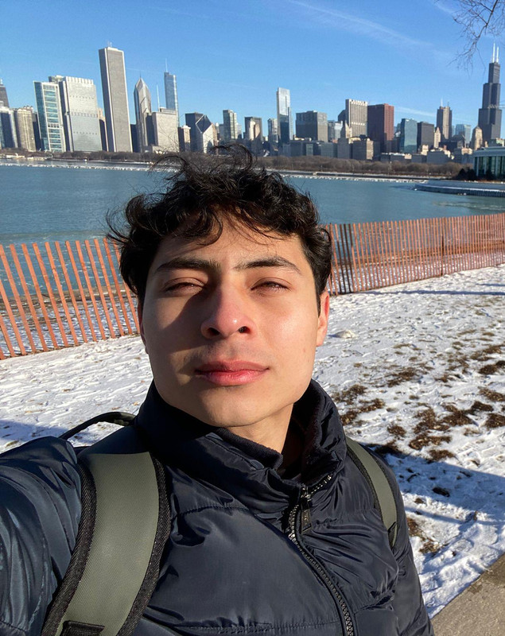

I hold a B.S. in Pure Mathematics with a minor in Computer Science from the University of Texas Rio Grande Valley. Currently, I am pursuing my master's degree in Applied Mathematics at UTRGV while working as a Graduate Teaching Assistant.
I enjoy running, chess, and Rubik's cubes.
Here are my chess accounts: chess.com and lichess
@mapipo100 —
@mapi100